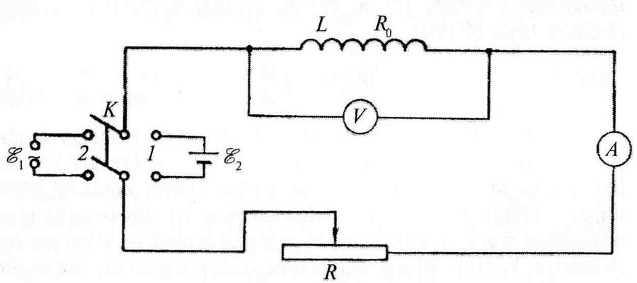

Faradey elektromagnit induksiya qonunini örganiş
1Işning maqsadi va kutilayotgan natijalar
Faradeyning elektromagnit induksiya qonuni va özinduksiya hodisasini örganiş; ğaltak induktivligini ampermetr–voltmetr usulida (özgarmas va özgaruvçan tokda ölçab) aniqlaş.
Fan dasturidagi ta’lim natijalari: TN2 — Fizik hodisalarni tajribada namoyiş qiliş, ölçov işlarini bajariş va natijalar aniqligini ta’minlaş; TN4 — Fizik hodisalarning fenomenologik mohiyatini öquvçilarga sodda, körgazmali va tuşunarli yetkaziş; TN6 — Tajriba natijalarini nazariya bilan soliştiriş, sabab-oqibatni tahlil qiliş va ilmiy asoslangan xulosa çiqariş; TN14 — Tajriba ma’lumotlari asosida grafiklar (VAX, rezonans egri çiziqlari va h.k.) çiziş va tahlil qiliş.
2Kerakli jihozlar
- Özgaruvçan tok manbai (50 Gs) va özgarmas tok manbai, ularni almaştiruvçi kalit \(K\)
- Ampermetr va voltmetr (özgarmas va özgaruvçan tok uçun)
- Induktiv ğaltak (özakli yoki özaksiz)
- Reostat \(R\), ulaş simlari
3Nazariy qism
14.1. Elektromagnit induksiya hodisasi
Kontur bilan çegaralangan sirtni özgaruvçan magnit oqimi kesib ötganda unda EYuK hosil bölişi elektromagnit induksiya deyiladi. U quyidagi hollarda kuzatiladi: (1) kontur va doimiy magnit bir-biriga nisbatan harakatlanganda; (2) berk kontur va tokli ötkazgiç bir-biriga nisbatan harakatlanganda; (3) kontur yaqinidagi ötkazgiçdagi tok özgarganda.
Faradey tajribalarni umumlaştirib, qonunni ta’rifladi: konturda hosil böladigan induksiya EYuK şu kontur bilan çegaralangan sirt orqali ötuvçi magnit oqimining özgariş tezligiga töğri proporsional:
$$\mathcal E_i=-\frac{d\Phi}{dt}\qquad(14.1)$$(SI da proporsionallik koeffitsiyenti 1 ga teng). Minus işorasi Lens qoidasini ifodalaydi: magnit oqimining har qanday özgarişi konturda şunday yönalişdagi tok hosil qiladiki, bu tokning magnit maydoni oqimning özgarişiga qarşilik qiladi.
14.2. Faradey qonunini energiyaning saqlanişidan keltirib çiqariş
EYuK \(\mathcal E\) li manba ulangan, qarşiligi \(R\) bölgan kontur magnit maydonda harakatlansin. \(dt\) vaqtda manba işi \(dA_2=\mathcal E I\,dt\), Joul issiqligi \(dA_1=I^2R\,dt\), konturni köçirişdagi Amper kuçlari işi \(dA=I\,d\Phi\). Energiyaning saqlaniş qonuniga köra \(dA_2=dA_1+dA\):
$$\mathcal E I\,dt=I^2R\,dt+I\,d\Phi\;\Rightarrow\;I=\frac{\mathcal E-\dfrac{d\Phi}{dt}}{R},$$ya’ni konturda qöşimça \(\mathcal E_i=-d\Phi/dt\) EYuK paydo böladi.
14.3. Özinduksiya va induktivlik
Konturdagi tok özgarsa, uning magnit maydoni va özi orqali ötuvçi oqim ham özgaradi — konturda özinduksiya EYuK hosil böladi. Bio–Savar–Laplas qonuniga köra \(B\propto I\), demak:
$$\Phi=L\,I,\qquad(14.7)\qquad \mathcal E_s=-L\frac{dI}{dt}.\qquad(14.8)$$\(L\) — konturning induktivligi (Genri, Gn); u konturning şakli, ölçamlari va muhitga boğliq. Uzun solenoid uçun \(B=\mu_0NI/l=\mu_0nI\), \(n=N/l\); bitta öramdan ötuvçi oqim \(\Phi_1=\mu_0nIS\), barça öramlardan \(\Phi=N\Phi_1=\mu_0n^2lS\,I\). Demak:
$$L_0=\mu_0n^2V=\mu_0\frac{N^2S}{l},\qquad L=\mu\mu_0n^2V,\qquad(14.10)$$$$\mu=\frac{L}{L_0}\qquad(14.11)$$— özakli va özaksiz induktivliklarni ölçab, özak materialining magnit singdiruvçanligini aniqlaş mumkin.
14.4. Induktivlikni ampermetr–voltmetr usulida ölçaş
Ğaltakning aktiv (omik) qarşiligi özgarmas tokda topiladi: \(R_L=U_=/I_=\). Özgaruvçan tokda ğaltakning töla qarşiligi \(Z=U_\sim/I_\sim\), bunda
$$Z=\sqrt{R_L^2+(\omega L)^2}\;\Rightarrow\;L=\frac{1}{\omega}\sqrt{\frac{U^2}{I^2}-R_L^2},\qquad(14.12)$$\(\omega=2\pi f=314\) rad/s. Sxema 14.1-rasmda: \(K\) kalit holati 1 da zanjir özgarmas tok manbaiga \(\mathcal E_1\), 2 da özgaruvçan tok manbaiga \(\mathcal E_2\) ulanadi.

4Işni bajariş tartibi
- 14.1-rasmdagi sxemani yiğing (öqituvçi tekşirgandan keyin ulang).
- Kalitni özgarmas tok holatiga qöyib, reostat bilan tokni örnating; voltmetr va ampermetr körsatişlaridan \(R_L=U/I\) ni toping.
- Kalitni özgaruvçan tok holatiga ötkazib, \(U\) va \(I\) ning effektiv qiymatlarini yozing.
- (14.12) formula böyiça \(L\) ni hisoblang.
- Ölçaşlarni tok va kuçlanişning turli qiymatlari uçun 3–4 marta takrorlab, induktivlikning örtaça qiymatini toping; absolyut, nisbiy va örtaça kvadratik xatoliklarni hisoblang.
- Ğaltakka temir özak kiritib, ölçaşni takrorlang va (14.11) böyiça \(\mu\) ni baholang.
14.1-jadval. Ğaltak induktivligi (ω = 314 rad/s)
| № | U₌, V | I₌, A | R_L, Om | U~, V | I~, A | Z = U/I, Om | L, Gn | L̄, Gn | ΔL, Gn | ε, % |
|---|---|---|---|---|---|---|---|---|---|---|
Jadval katakçalariga bevosita yoziş mumkin (ma’lumotlar sahifa yopilganda saqlanmaydi — hisobotga köçirib oling).
5Natijalarni qayta işlaş va xatoliklar
Har bir ölçaş uçun \(R_L=U_=/I_=\), \(Z=U_\sim/I_\sim\), \(X_L=\sqrt{Z^2-R_L^2}\), \(L=X_L/\omega\). Örtaça qiymat \(\overline L\), absolyut xatoliklar \(\Delta L_i=|\overline L-L_i|\), nisbiy xatolik \(\varepsilon=\overline{\Delta L}/\overline L\cdot100\%\) va örtaça kvadratik xatolik \(S_{\overline L}=\sqrt{\sum\Delta L_i^2/(n(n-1))}\) topiladi.
Agar ğaltak ölçamlari ma’lum bölsa, özaksiz holat uçun \(L_0=\mu_0N^2S/l\) nazariy qiymatni hisoblab, tajriba bilan soliştiring.
Xatoliklar nazariyasi: laboratoriyaga kiriş bölimi.
Takroriy ölçaşlar kalkulyatori
Eng kiçik kvadratlar usuli (töğri çiziq y = kx + b)
6Namunaviy hisob
Şart. Özgarmas tokda \(U_==3{,}6\) V, \(I_==0{,}30\) A; özgaruvçan tokda (50 Gs) \(U_\sim=6{,}0\) V, \(I_\sim=0{,}30\) A. Ğaltak induktivligini toping. Temir özak kiritilganda \(I_\sim\) 0,075 A ga kamaydi (\(U_\sim\) öşa). \(\mu\) ni baholang.
Yeçimni körsatiş
\(R_L=12\) Om; \(Z=20\) Om; \(X_L=\sqrt{400-144}=16\) Om; \(L=16/314=51\) mGn. Özak bilan: \(Z=80\) Om, \(X_L=\sqrt{6400-144}=79{,}1\) Om, \(L=0{,}252\) Gn. \(\mu\approx L/L_0\approx4{,}9\) (oçiq özak uçun samarali singdiruvçanlik).
7Virtual laboratoriya: Elektromagnit induksiya va ğaltak induktivligi
- Magnit ğaltak orqali sekundiga 1 metr tezlikda ötmoqda. Yuqorida EYuK impulslari, pastda magnit oqimi. Kirişda va çiqişda impulslar işorasi qarama-qarşi — Lens qoidasi.
- Tezlikni ikki marta oşiramiz. EYuK amplitudasi ikki marta ortdi, impuls esa ikki marta qisqardi. Impuls yuzasi özgarmadi.
- Öramlar sonini ikki marta oşiramiz: EYuK ham, impuls yuzasi ham ikki marta ortdi.
- Namoyiş tugadi. Endi parametrlarni özingiz özgartirib, natijalarni jadvalga yozing.
Virtual laboratoriyadagi topşiriqlar
- Magnit tezligini 2 marta oşiring: \(\mathcal E_{max}\) va impuls yuzasi qanday özgaradi?
- Öramlar sonini oşiring va impuls yuzasining proporsionalligini tekşiring.
- Grafikdagi ikki impuls işoralari nima uçun qarama-qarşi? Lens qoidasi bilan izohlang.
Model öquv maqsadida soddalaştirilgan. “Asbob körsatişi” deb belgilangan qiymatlarga real ölçaşdagi kabi kiçik tasodifiy çetlaniş qöşilgan — takroriy ölçaşlar uçun foydalaning.
8Texnika xavfsizligi
- Kuçli neodim magnitlarni bir-biriga yaqinlaştirmang — sinişi va barmoqni qisişi mumkin.
- Nayçadan tuşgan magnitni uşlab oluvçi yumşoq taglik qöying.
- Magnitni elektron asboblardan uzoq saqlang.
9Himoya uçun nazorat savollari
- Faradeyning elektromagnit induksiya qonunini ta’riflang.
- Lens qoidasini tuşuntiring.
- Özinduksiya hodisasi nima?
- Induktivlik deb nimaga aytiladi va u qanday birlikda ölçanadi?
- Solenoidning induktivligi qanday kattaliklarga boğliq?
- Ğaltakning induktiv qarşiligi qanday aniqlanadi?
Mustahkamlaş: FSMU texnologiyasi
“Elektromagnit induksiya qonuni” mavzusida F — fikr, S — sabab, M — misol, U — umumlaştiriş tartibida javob yozing.
Blits-sörov
- Elektromagnit induksiya hodisasi nima? Uni qaçon kuzatiş mumkin?
- Elektromagnit induksiya qanday fizik kattaliklarga boğliq?
- Induksion EYuK nima? Özinduksiya hodisasi nima?
- Solenoid uçun induktivlik koeffitsiyenti qanday ifodalanadi?
- Ğaltakning induktivligi ampermetr va voltmetr yordamida qanday aniqlanadi?
- Induktivlik köprik sxema yordamida qanday aniqlanadi? Bu usullarning afzalliklari nimada?
10Nazorat testi (10 savol, öz-özini tekşiriş)
1. Faradey qonuni:
2. Lens qoidasi nimani ifodalaydi?
3. Özinduksiya EYuK:
4. Induktivlikning SI birligi:
5. Ğaltakda \(R_L=6\) Om, 50 Gs da \(Z=10\) Om. Induktiv qarşilik:
6. \(X_L=31{,}4\) Om, \(f=50\) Gs. Induktivlik:
7. Solenoid öramlari soni 2 marta oşirilsa (ölçamlari özgarmas), induktivlik:
8. Ğaltakka temir özak kiritilsa, özgaruvçan tokdagi tok kuçi (U özgarmas):
9. Nima uçun ğaltakning aktiv qarşiligi özgarmas tokda ölçanadi?
10. Kalitni uzoq ulab qöyiş nima uçun mumkin emas?
Bu test öz-özini tekşiriş uçun; rasmiy oraliq nazorat HEMIS’da ötkaziladi.
11Sun’iy intellekt bilan işlaş
Men pedagogika oliygohining fizika yönalişi talabasiman. “Faradey elektromagnit induksiya qonunini örganiş” laboratoriya işini bajardim. 1) Mening ölçaş jadvalimni tekşir: birliklar, xonalar soni, aniq xato yozuvlar. 2) Natijani qayta işlaş bosqiçlarini tuşuntir (örtaça, Styudent usuli, bilvosita ölçaş xatoligi), lekin hisobni özim bajaraman. 3) Natijam jadval qiymatidan farq qilsa, mumkin bölgan tizimli xatolik manbalarini sanab ber. 4) Himoya uçun 3 ta savol ber. Çeklov: formulalarni LaTeX’da yoz, işonçing komil bölmagan joyni oçiq ayt. [Şu yerga ölçaş jadvalingizni qöying]
12Adabiyotlar
- [2] Toşxonova J.A. va boşq. Fizikadan praktikum. Elektr va magnetizm. — Toşkent, 2006.
- [5] Nurmatov N. Elektr va magnetizm fanidan praktikum. — 2021.
- [1] Orifjonov S. Elektromagnitizm. — Toşkent, 2011.
- Halliday D., Resnick R., Walker J. Fundamentals of Physics. 12th ed. — Hoboken: Wiley, 2021.
- Purcell E.M., Morin D.J. Electricity and Magnetism. 3rd ed. — Cambridge University Press, 2013.
[1]–[5] — fan dasturidagi asosiy, [Q…] — qöşimça adabiyotlar raqamlanişi. Xalqaro darsliklar çuqurlaştiriş uçun tavsiya etiladi.
Öqituvçi uçun: 80 daqiqalik maşğulot rejasi
| Vaqt | Bosqiç | Faoliyat |
|---|---|---|
| 0–10 | Kiriş nazorati (dopusk) | Himoya savollaridan 2–3 tasi; xavfsizlik böyiça yöriqnoma; jurnalga qayd |
| 10–25 | Yiğiş va sozlaş | Zanjir/qurilmani yiğiş, öqituvçi tekşiruvi; jihoz yetişmasa — virtual laboratoriya |
| 25–55 | Ölçaş | Jadvalni töldiriş, takroriy ölçaşlar; virtual model bilan soliştiriş |
| 55–70 | Qayta işlaş | Grafik, eng kiçik kvadratlar, xatoliklar; kalkulyatorlar bilan tekşiriş |
| 70–80 | Himoya | Xulosa, nazorat savollari; DF bali (JN tarkibida) |
Maşğulot: L20 (fan dasturi böyiça). Batafsil: öqituvçi qöllanmasi.